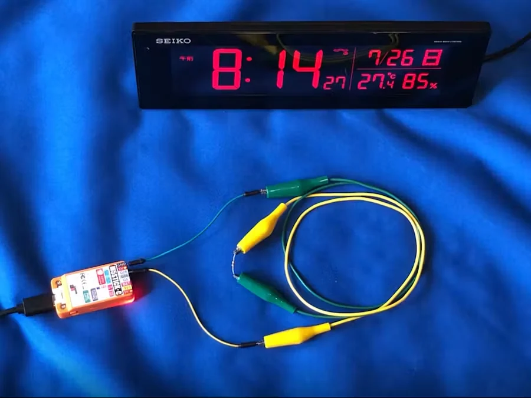
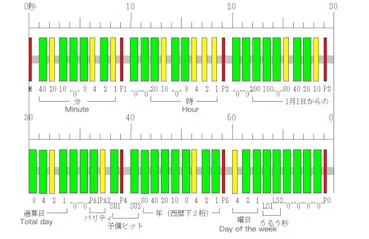
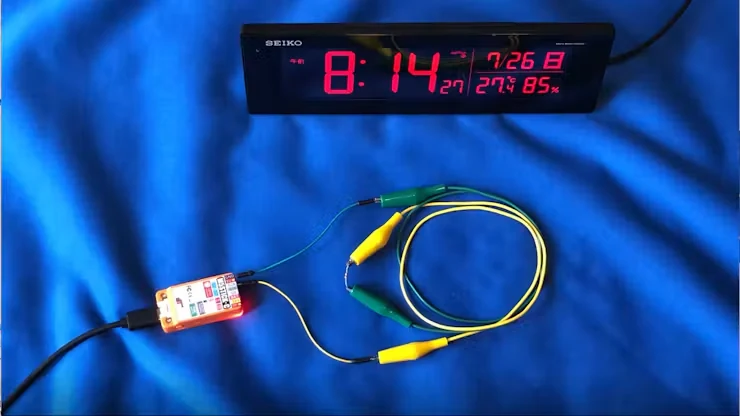
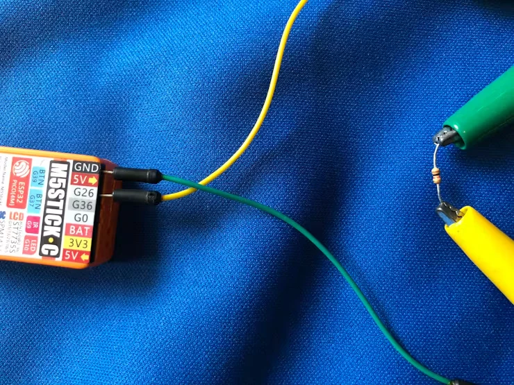
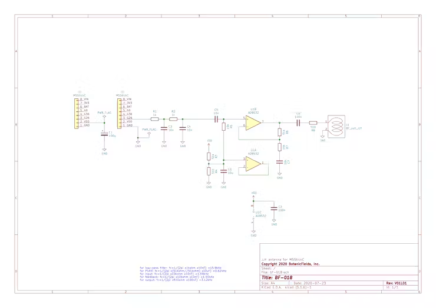

Generate Standard Radio Wave JJY with Ticker of M5StickC
Transit NTP acquisition time short-distance transmission within weak distance.

Things used in this project
Hardware components
Story
1. Introduction
The radio wave watch can calibrate the time by receiving the standard radio wave.It is also common to obtain the time through NTP or GPS equipment, and then send them according to the method of receiving standard radio waves to generate pseudo-standard radio waves.
2. Approach
The standard radio wave specifications are in NICT7. I will generate the time code of normal time in that pseudo.
("Time code for normal time (except 15 minutes and 45 minutes every hour) (example)" Source: NICT8)

Time code emits one of the following pulse widths every second
•0.2s ±5ms: Marker (M), Position marker (P0 to P5)
•0.5s ±5ms: binary 1
•0.8s ±5ms: binary 0
The JJY signal control (turn on/off/do nothing) from the current date (year/month/day/weekday) or time (hour/minute/second) at every 0.1 second is unique. It will be decided. A timer interrupt can be used to acquire the timing of 0.1 seconds. If implemented in this way, processing can be completed only by interrupts, and execution in the background is also possible. Also, a pulse can be output even in the middle of the time code, making it easy to check the operation start.
3. Timer interrupt
Choose M5StickC as the device and Arduino IDE as the development environment. Use Ticker as a timer interrupt. It seems that the hardware timer interrupt can also be used, but it is overspec for this application.
Ticker
The Ticker provided as a library of the Arduino IDE cannot be expected to have the accuracy of a hardware timer interrupt, but it can be used easily by following the sample program. This time, it is a process of 100 ms cycle, and the required accuracy is ±5 ms.
Hardware timer interrupt
The power of hardware timer interrupts in ESP32 is detailed.Even with a cycle of milliseconds or less, it can be processed with a small delay.
4. Coding
4.1 Ticker definition
The process of activating the function TCO_gen() that generates the JJY signal (TCO: Time Code Output) at 100 ms cycles can be coded as follows using the Ticker class.
#include <Ticker.h>
// for TCO(Time Code Output)
const int TK_MS = 100; // Ticker period (ms)
Ticker tk;
void setup() {
M5.begin();
// start TCO
tk.attach_ms(TK_MS, TCO_gen);
}4.2 JJY signal generation
TCO_gen(), which starts every 100ms, checks the current time (0.1 seconds) and calls the processing of the JJY signal at 0.0 seconds, 0.2 seconds, 0.5 seconds, and 0.8 seconds. The current time (0.1 seconds) is obtained as microseconds in the tv_usec member of the timeval structure. Also get datetime information with getlocaltime().
struct timeval tv_now;
// main task of TCO
void TCO_gen() {
if(!getLocalTime(&timeinfo)) {
Serial.println("[TCO]Failed to obtain time");
return;
}
gettimeofday(&tv_now, NULL);
long tv_100ms = tv_now.tv_usec / 100000L;
switch(tv_100ms) {
case 0: TCO_000ms(); break;
case 2: TCO_200ms(); break;
case 5: TCO_500ms(); break;
case 8: TCO_800ms(); break;
default: break;
}
}The following is each processing for 0.0 seconds, 0.2 seconds, 0.5 seconds, and 0.8 seconds at the current time (0.1 seconds).
At 0.0 seconds anyway turn on the JJY signal
At 0.2 seconds, at the time (seconds) to send the marker, turn off the JJY signal.
At 0.5 seconds, the JJY signal is turned off at the time (seconds) to send 1 from the current date and time.
At 0.8 seconds, just turn off the JJY signal
// for TCO(Time Code Output)
const int MARKER = 0xff; // MARKER code which TCO_val() returns
// TCO task at every 0ms
void TCO_000ms() {
TC_on();
}
// TCO task at every 200ms
void TCO_200ms() {
if(TC_val() == MARKER) {
TC_off();
}
}
// TCO task at every 500ms
void TCO_500ms() {
if(TC_val() != 0) {
TC_off();
}
}
// TCO task at every 800ms
void TCO_800ms() {
TC_off();
}The contents of the function TC_val() that returns the signal (marker, 1, 0) to be sent at the current time (seconds) from the date and time. It is a simple structure with 60 case statements.
// for TCO(Time Code Output)
const int MARKER = 0xff; // MARKER code which TCO_val() returns
// TCO value
// MARKER, 1:not zero, 0:zero
int TC_val() {
int h = int3bcd(timeinfo.tm_hour);
int parity_h = parity8(h);
int m = int3bcd(timeinfo.tm_min);
int parity_m = parity8(m);
int year = timeinfo.tm_year + 1900;
int y = int3bcd(year);
const int MONTH[12] = { 31, 28, 31, 30, 31, 30, 31, 31, 30, 31, 30, 31 };
int days = timeinfo.tm_mday;
for(int i = 0; i < timeinfo.tm_mon; i++) { // timeinfo.tm_mon starts from 0
days += MONTH[i];
}
if((timeinfo.tm_mon > 1) && ((year % 4 == 0) && (year % 100 != 0)) || (year % 400 == 0)) {
days++;
}
int d = int3bcd(days);
int w = timeinfo.tm_wday;
int tc;
switch(timeinfo.tm_sec) {
case 0: tc = MARKER; break;
case 1: tc = m & 0x40; break;
case 2: tc = m & 0x20; break;
case 3: tc = m & 0x10; break;
case 4: tc = 0; break;
case 5: tc = m & 0x08; break;
case 6: tc = m & 0x04; break;
case 7: tc = m & 0x02; break;
case 8: tc = m & 0x01; break;
case 9: tc = MARKER; break;
case 10: tc = 0; break;
case 11: tc = 0; break;
case 12: tc = h & 0x20; break;
case 13: tc = h & 0x10; break;
case 14: tc = 0; break;
case 15: tc = h & 0x08; break;
case 16: tc = h & 0x04; break;
case 17: tc = h & 0x02; break;
case 18: tc = h & 0x01; break;
case 19: tc = MARKER; break;
case 20: tc = 0; break;
case 21: tc = 0; break;
case 22: tc = d & 0x200; break;
case 23: tc = d & 0x100; break;
case 24: tc = 0; break;
case 25: tc = d & 0x080; break;
case 26: tc = d & 0x040; break;
case 27: tc = d & 0x020; break;
case 28: tc = d & 0x010; break;
case 29: tc = MARKER; break;
case 30: tc = d & 0x008; break;
case 31: tc = d & 0x004; break;
case 32: tc = d & 0x002; break;
case 33: tc = d & 0x001; break;
case 34: tc = 0; break;
case 35: tc = 0; break;
case 36: tc = parity_h; break;
case 37: tc = parity_m; break;
case 38: tc = 0; break;
case 39: tc = MARKER; break;
case 40: tc = 0; break;
case 41: tc = y & 0x80; break;
case 42: tc = y & 0x40; break;
case 43: tc = y & 0x20; break;
case 44: tc = y & 0x10; break;
case 45: tc = y & 0x08; break;
case 46: tc = y & 0x04; break;
case 47: tc = y & 0x02; break;
case 48: tc = y & 0x01; break;
case 49: tc = MARKER; break;
case 50: tc = w & 0x04; break;
case 51: tc = w & 0x02; break;
case 52: tc = w & 0x01; break;
case 53: tc = 0; break;
case 54: tc = 0; break;
case 55: tc = 0; break;
case 56: tc = 0; break;
case 57: tc = 0; break;
case 58: tc = 0; break;
case 59: tc = MARKER; break;
default: tc = 0; break;
}
return tc;
}
int int3bcd(int a) {
return (a % 10) + (a / 10 % 10 * 16) + (a / 100 % 10 * 256);
}
int parity8(int a) {
int pa = a;
for(int i = 1; i < 8; i++) {
pa += a >> i;
}
return pa % 2;
}4.3 40kHz signal generation
Use the LEDC library provided by Arduino IDE for ESP32. Turn the LEDC signal on and off by changing the duty setting. Frequent duty changes in PWM are expected. The signal is off with a duty of 0%. The built-in LED of M5StickC for monitor is turned on and off at the same time. LOW turns it on, and HIGH turns it off.
// for LEDC(PWM)
const uint8_t LEDC_PIN = 26;
const uint8_t LEDC_CH = 0;
const double LEDC_FREQ = 4e4; // 40kHz
const uint8_t LEDC_RESO = 10; // 2^10 = 1024
const uint32_t LEDC_DUTY_ON = 512; // 50%
const uint32_t LEDC_DUTY_OFF = 0; // 0
// for monitoring
const int LED = 10; // LED to monitor
bool led_enable = true; //
void setup() {
M5.begin();
// start LEDC
ledcSetup(LEDC_CH, LEDC_FREQ, LEDC_RESO);
ledcAttachPin(LEDC_PIN, LEDC_CH);
// for monitoring
pinMode(LED, OUTPUT);
}
void TC_on() {
ledcWrite(LEDC_CH, LEDC_DUTY_ON);
if(led_enable) digitalWrite(LED, LOW);
}
void TC_off() {
ledcWrite(LEDC_CH, LEDC_DUTY_OFF);
digitalWrite(LED, HIGH);
}4.4 Other
Wifi settings
I am using WiFiManager. You need to install the following libraries with the Library Manager.
•WiFiManager by tzapu, tablatronix
There are many similar libraries, but the above is GitHub with many Stars outstanding. I'm curious about the alpha version. Please refer to the description of WiFiManager on GitHub for how to connect to Wifi.
#include <WiFi.h>
#include <WiFiManager.h> // https://github.com/tzapu/WiFiManager
void setup() {
M5.begin();
// setup Wifi
WiFi.mode(WIFI_STA);
WiFiManager wm;
bool res = wm.autoConnect(); // auto generated AP name from chipid
// bool res = wm.autoConnect("AutoConnectAP"); // anonymous ap
// bool res = wm.autoConnect("AutoConnectAP","password"); // password protected ap
if(!res)
Serial.println("Failed to connect");
else
Serial.println("connected...yeey :)");
}NTP设定
Normal NTP setting.
// for NTP and time
const long GMTOFFSET = 3600 * 9; // JST-9
const int DAYLIGHT = 3600 * 0; // No daylight time
const char* NTPSERVER = "pool.ntp.org";
struct tm timeinfo;
void setup() {
M5.begin();
// start NTP
configTime(GMTOFFSET, DAYLIGHT, NTPSERVER);
while(!getLocalTime(&timeinfo)) {
Serial.println("Failed to obtain time");
delay(100);
}
Serial.println(&timeinfo, "%A %B %d %Y %H:%M:%S");
}5. Ticker cycle variation
For each Ticker interrupt, I tried to aggregate the variation in the elapsed time since the last interrupt. The median value is 0 when the elapsed time is 100 ms.
Range number of times
～ -50ms 5
- 50ms ～ -5ms 4
- 5ms ～ -0.5ms 8042
- 0.5ms ～ -0.05ms 8825
- 0.05ms ～ 0.05ms 910959
0.05ms ～ 0.5ms 9050
0.5ms ～ 5ms 7766
5ms ～ 50ms 9
50ms ～ 6
•Average: 0.0985ms
•Standard deviation: 380.6480ms
Ticker cycle deviation is outside the range of ±5ms 24 times in 26 hours. The average value is not 0 due to extremely bad effects. We anticipate that the ticker cycle is disturbed due to competition with system processing including NTP and Wifi. However, it is 99.997% within the specified range (±5ms), and it seems that there is no problem in practice because the radio clock will also retry. From the standard deviation ±6σ = ±2283.888 = ±2.3ms is also within ±5ms, which seems to be a quality with no problem as an industry standard.
6. Hardware
The 40kHz pseudo JJY signal is output from GPIO26 of M5StickC. Connect between GPIO26 and GND by inserting a 1k ohm resistor on the way with a wire. The pseudo JJY signal current flows with a strength of about 3mA. When you lay a wire near the radio-controlled watch, the radio-controlled watch receives the magnetic field generated around the wire. We uploaded videos of how to set the time.
youtube - JJY Simulator by M5StickC for a radio controlled clock


6.1 Waveform improvement
The 40kHz signal output by GPIO is a square wave and contains a large amount of unnecessary frequency components. For constant use, I would like to make it closer to a sine wave. A low pass filter removes high frequency components. The resistance and capacitor values of the low-pass filter were determined by looking at the waveform on the oscilloscope. Even if the cutoff frequency was around 40kHz, the waveform did not become round enough. It has a 2-stage configuration with a cutoff frequency of about 16 kHz, which is assumed to be amplified later.

Alternative hardware configuration
Instead of outputting the JJY signal directly from GPIO, the same level signal as the monitor LED may be output from GPIO, and an external analog switch may be controlled to turn on/off the 40kHz signal. The 40kHz source can be constantly output from another GPIO for waveform shaping, or an external good quality oscillator can be used. The analog switch can be used to directly turn on/off the 40kHz signal or to control the gain of the amplifier.
6.2 Printed board
We have manufactured a printed circuit board that houses the above circuits and has the antenna loop pattern built into the board.We used KiCad for the design and the public Python tools for the loop pattern
https://github.com/jedrzejboczar/kicad-coil-generator
Schematics
BF-018_SCM: bf-018_scm.pdf (copy kept here) · original attachment on Hackster.io
Code
JJY Simulator for M5StickC · C/C++
// copyright 2020 BotanicFields, Inc.
// BF-018
// JJY Simulator for M5StickC
//
#include <M5StickC.h>
#include <Ticker.h>
#include <WiFi.h>
#include <WiFiManager.h> // https://github.com/tzapu/WiFiManager
// for NTP and time
const long GMTOFFSET = 3600 * 9; // JST-9
const int DAYLIGHT = 3600 * 0; // No daylight time
const char* NTPSERVER = "pool.ntp.org";
struct tm timeinfo;
struct timeval tv_now;
// for LEDC(PWM)
const uint8_t LEDC_PIN = 26;
const uint8_t LEDC_CH = 0;
const double LEDC_FREQ = 4e4; // 40kHz
const uint8_t LEDC_RESO = 10; // 2^10 = 1024
const uint32_t LEDC_DUTY_ON = 512; // 50%
const uint32_t LEDC_DUTY_OFF = 0; // 0
// for monitoring
const int LED = 10; // LED to monitor
bool led_enable = true; //
// for TCO(Time Code Output)
const int TK_MS = 100; // Ticker period (ms)
const int MARKER = 0xff; // MARKER code which TCO_val() returns
long last_us; // for statistics of Ticker
Ticker tk;
// main task of TCO
void TCO_gen() {
if(!getLocalTime(&timeinfo)) {
Serial.println("[TCO]Failed to obtain time");
return;
}
gettimeofday(&tv_now, NULL);
long tv_100ms = tv_now.tv_usec / 100000L;
switch(tv_100ms) {
case 0: TCO_000ms(); break;
case 2: TCO_200ms(); break;
case 5: TCO_500ms(); break;
case 8: TCO_800ms(); break;
default: break;
}
// statistics of tv_usec
long now_us = tv_now.tv_usec;
if(now_us < 100000L) now_us += 1000000L;
long diff_us = now_us - last_us - 100000L;
last_us = tv_now.tv_usec;
static long diff_num = 0L;
static long diff_max = 0L;
static long diff_min = 0L;
static double diff_sum = 0.0;
static double diff_sum_sq = 0.0;
diff_num++;
if(diff_max < diff_us) diff_max = diff_us;
if(diff_min > diff_us) diff_min = diff_us;
diff_sum += (double)diff_us;
diff_sum_sq += (double)diff_us * (double)diff_us;
static long dist[9] = {0L, 0L, 0L, 0L, 0L, 0L, 0L, 0L, 0L};
if( diff_us < -50000) dist[0]++; // < -50000us(< -50ms)
else if(diff_us < -5000) dist[1]++; // < -5000us(< -5ms)
else if(diff_us < -500) dist[2]++; // < -500us
else if(diff_us < -50) dist[3]++; // < -50us
else if(diff_us < 50) dist[4]++; // -50~50us
else if(diff_us < 500) dist[5]++; // > 50us
else if(diff_us < 5000) dist[6]++; // > 500us
else if(diff_us < 50000) dist[7]++; // > 5000us(> 5ms)
else dist[8]++; // > 50000us(> 50ms)
if((timeinfo.tm_sec == 0) && (tv_now.tv_usec < 100000)) {
for(int i = 0; i < 9; i++) {
Serial.printf("%d ", dist[i]);
}
Serial.println();
double diff_ave = diff_sum / (double)diff_num;
double diff_var = (diff_sum_sq - diff_sum * diff_sum / (double)diff_num) / (double)diff_num;
double diff_sdv = sqrt(diff_var);
Serial.printf("n= %d, ave= %.4f sdv= %.4f min= %d max= %d\n", diff_num, diff_ave, diff_sdv, diff_min, diff_max);
}
}
// TCO task at every 0ms
void TCO_000ms() {
TC_on();
if(timeinfo.tm_sec == 0) {
Serial.println();
Serial.println(&timeinfo, "%A %B %d %Y %H:%M:%S ");
}
}
// TCO task at every 200ms
void TCO_200ms() {
if(TC_val() == MARKER) {
TC_off();
Serial.print(" ");
Serial.print(timeinfo.tm_sec);
Serial.print(" ");
}
}
// TCO task at every 500ms
void TCO_500ms() {
if(TC_val() != 0) {
TC_off();
if(TC_val() != MARKER) {
Serial.print("1");
}
}
}
// TCO task at every 800ms
void TCO_800ms() {
TC_off();
if(TC_val() == 0) {
Serial.print("0");
}
}
void TC_on() {
ledcWrite(LEDC_CH, LEDC_DUTY_ON);
if(led_enable) digitalWrite(LED, LOW);
}
void TC_off() {
ledcWrite(LEDC_CH, LEDC_DUTY_OFF);
digitalWrite(LED, HIGH);
}
// TCO value
// MARKER, 1:not zero, 0:zero
int TC_val() {
int h = int3bcd(timeinfo.tm_hour);
int parity_h = parity8(h);
int m = int3bcd(timeinfo.tm_min);
int parity_m = parity8(m);
int year = timeinfo.tm_year + 1900;
int y = int3bcd(year);
const int MONTH[12] = { 31, 28, 31, 30, 31, 30, 31, 31, 30, 31, 30, 31 };
int days = timeinfo.tm_mday;
for(int i = 0; i < timeinfo.tm_mon; i++) { // timeinfo.tm_mon starts from 0
days += MONTH[i];
}
if((timeinfo.tm_mon > 1) && ((year % 4 == 0) && (year % 100 != 0)) || (year % 400 == 0)) {
days++;
}
int d = int3bcd(days);
int w = timeinfo.tm_wday;
int tc;
switch(timeinfo.tm_sec) {
case 0: tc = MARKER; break;
case 1: tc = m & 0x40; break;
case 2: tc = m & 0x20; break;
case 3: tc = m & 0x10; break;
case 4: tc = 0; break;
case 5: tc = m & 0x08; break;
case 6: tc = m & 0x04; break;
case 7: tc = m & 0x02; break;
case 8: tc = m & 0x01; break;
case 9: tc = MARKER; break;
case 10: tc = 0; break;
case 11: tc = 0; break;
case 12: tc = h & 0x20; break;
case 13: tc = h & 0x10; break;
case 14: tc = 0; break;
case 15: tc = h & 0x08; break;
case 16: tc = h & 0x04; break;
case 17: tc = h & 0x02; break;
case 18: tc = h & 0x01; break;
case 19: tc = MARKER; break;
case 20: tc = 0; break;
case 21: tc = 0; break;
case 22: tc = d & 0x200; break;
case 23: tc = d & 0x100; break;
case 24: tc = 0; break;
case 25: tc = d & 0x080; break;
case 26: tc = d & 0x040; break;
case 27: tc = d & 0x020; break;
case 28: tc = d & 0x010; break;
case 29: tc = MARKER; break;
case 30: tc = d & 0x008; break;
case 31: tc = d & 0x004; break;
case 32: tc = d & 0x002; break;
case 33: tc = d & 0x001; break;
case 34: tc = 0; break;
case 35: tc = 0; break;
case 36: tc = parity_h; break;
case 37: tc = parity_m; break;
case 38: tc = 0; break;
case 39: tc = MARKER; break;
case 40: tc = 0; break;
case 41: tc = y & 0x80; break;
case 42: tc = y & 0x40; break;
case 43: tc = y & 0x20; break;
case 44: tc = y & 0x10; break;
case 45: tc = y & 0x08; break;
case 46: tc = y & 0x04; break;
case 47: tc = y & 0x02; break;
case 48: tc = y & 0x01; break;
case 49: tc = MARKER; break;
case 50: tc = w & 0x04; break;
case 51: tc = w & 0x02; break;
case 52: tc = w & 0x01; break;
case 53: tc = 0; break;
case 54: tc = 0; break;
case 55: tc = 0; break;
case 56: tc = 0; break;
case 57: tc = 0; break;
case 58: tc = 0; break;
case 59: tc = MARKER; break;
default: tc = 0; break;
}
return tc;
}
int int3bcd(int a) {
return (a % 10) + (a / 10 % 10 * 16) + (a / 100 % 10 * 256);
}
int parity8(int a) {
int pa = a;
for(int i = 1; i < 8; i++) {
pa += a >> i;
}
return pa % 2;
}
// LCD display
const int UPDATE_INTERVAL = 100; // delay in ms
const int SHOW_DULATION = 5000 / UPDATE_INTERVAL; // dulation in ms / INTERVAL
int showRemain = 0;
void showSetup() {
M5.Lcd.setRotation(1);
M5.Lcd.fillScreen(BLACK);
M5.Axp.ScreenBreath(7);
}
void showStatus(bool show_yes) {
if(show_yes) {
M5.Axp.ScreenBreath(10);
M5.Lcd.setTextSize(1);
M5.Lcd.setCursor(0, 0, 2);
M5.Lcd.setTextColor(WHITE, DARKGREEN);
M5.Lcd.println(" BotanicFields, Inc. ");
M5.Lcd.setTextColor(WHITE, BLACK);
M5.Lcd.println(WiFi.SSID());
M5.Lcd.println(WiFi.localIP().toString());
if(!getLocalTime(&timeinfo)) {
M5.Lcd.println("Failed to obtain time");
}
else {
M5.Lcd.println(&timeinfo, "%B %d %Y");
M5.Lcd.println(&timeinfo, "%A %H:%M:%S");
}
M5.Lcd.setCursor(120, 32, 2);
if(led_enable) {
M5.Lcd.println("L-on ");
}
else {
M5.Lcd.println("L-off");
}
}
else {
M5.Lcd.fillScreen(BLACK);
M5.Axp.ScreenBreath(7);
}
}
// for RTC .. not used actually
void RTCset() {
RTC_TimeTypeDef TimeStruct;
TimeStruct.Hours = timeinfo.tm_hour;
TimeStruct.Minutes = timeinfo.tm_min;
TimeStruct.Seconds = timeinfo.tm_sec;
M5.Rtc.SetTime(&TimeStruct);
RTC_DateTypeDef DateStruct;
DateStruct.WeekDay = timeinfo.tm_wday;
DateStruct.Month = timeinfo.tm_mon + 1;
DateStruct.Date = timeinfo.tm_mday;
DateStruct.Year = timeinfo.tm_year + 1900;
M5.Rtc.SetData(&DateStruct);
}
void setup() {
M5.begin();
// setup Wifi
WiFi.mode(WIFI_STA);
WiFiManager wm;
bool res = wm.autoConnect(); // auto generated AP name from chipid
// bool res = wm.autoConnect("AutoConnectAP"); // anonymous ap
// bool res = wm.autoConnect("AutoConnectAP","password"); // password protected ap
if(!res)
Serial.println("Failed to connect");
else
Serial.println("connected...yeey :)");
// start NTP
configTime(GMTOFFSET, DAYLIGHT, NTPSERVER);
while(!getLocalTime(&timeinfo)) {
Serial.println("Failed to obtain time");
delay(100);
}
Serial.println(&timeinfo, "%A %B %d %Y %H:%M:%S");
RTCset(); // The RTC is not used anyway.
// start LEDC
ledcSetup(LEDC_CH, LEDC_FREQ, LEDC_RESO);
ledcAttachPin(LEDC_PIN, LEDC_CH);
// for monitoring
pinMode(LED, OUTPUT);
// wait until middle of 100ms timing. ex. 50ms, 150ms, 250ms,..
gettimeofday(&tv_now, NULL);
delayMicroseconds(150000L - tv_now.tv_usec % 100000L);
// for statistics of first sample
gettimeofday(&tv_now, NULL);
last_us = tv_now.tv_usec;
// start TCO
tk.attach_ms(TK_MS, TCO_gen);
// for main loop
showSetup();
}
void loop() {
M5.update();
// button-A: LCD-on for a while
if(M5.BtnA.wasReleased()) {
showStatus(true);
showRemain = SHOW_DULATION;
}
else if(showRemain != 0) {
showStatus(true);
showRemain--;
}
else {
showStatus(false);
}
// button-B: LED monitor on/off
if(M5.BtnB.wasReleased()) {
led_enable = !led_enable;
}
// loop delay
delay(UPDATE_INTERVAL);
}
/*
The MIT License
SPDX short identifier: MIT
Copyright 2019 BotanicFields, Inc.
Permission is hereby granted, free of charge, to any person obtaining a copy
of this software and associated documentation files (the "Software"), to deal
in the Software without restriction, including without limitation the rights
to use, copy, modify, merge, publish, distribute, sublicense, and/or sell
copies of the Software, and to permit persons to whom the Software is
furnished to do so, subject to the following conditions:
The above copyright notice and this permission notice shall be included in all
copies or substantial portions of the Software.
THE SOFTWARE IS PROVIDED "AS IS", WITHOUT WARRANTY OF ANY KIND, EXPRESS OR
IMPLIED, INCLUDING BUT NOT LIMITED TO THE WARRANTIES OF MERCHANTABILITY,
FITNESS FOR A PARTICULAR PURPOSE AND NONINFRINGEMENT. IN NO EVENT SHALL THE
AUTHORS OR COPYRIGHT HOLDERS BE LIABLE FOR ANY CLAIM, DAMAGES OR OTHER
LIABILITY, WHETHER IN AN ACTION OF CONTRACT, TORT OR OTHERWISE, ARISING FROM,
OUT OF OR IN CONNECTION WITH THE SOFTWARE OR THE USE OR OTHER DEALINGS IN THE
SOFTWARE.
*/
Credits
- BotanicFields
- Posted by vany5921